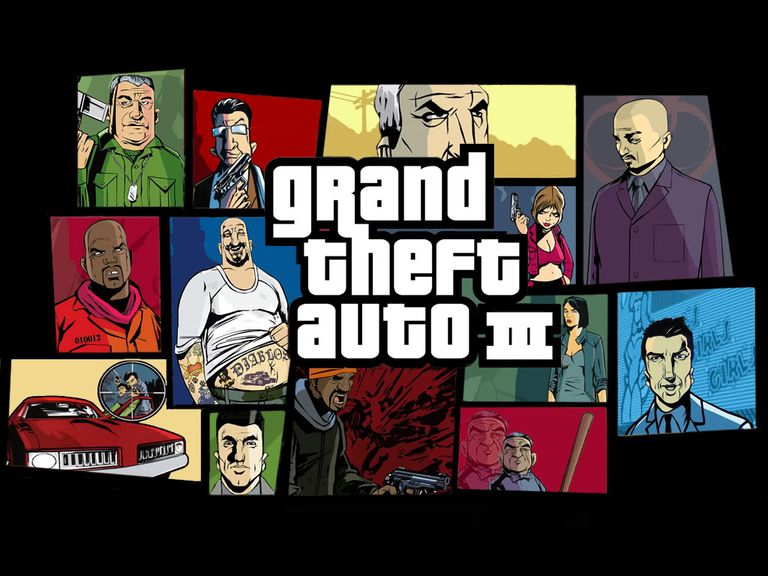

______________________________________________________________________________________________________________________________________________________
Ég fæddist 30. september árið 2002 í Landspítalanum í kringum kl 22:00. Ég flutti í Gravarvoginn þegar ég var tveggja ára og bý ennþá þar. Ég fór í leikaskóla sem er mjög nálægt þar sem ég bý. Tveggja mínútu ganga.
Þegar ég var búinn þar gekk ég í Korpuskóla. Hann heitir núna Kelduskóli-Korpa vegna þess að Víkurskóli og Korpuskóli sameinuðust og endurskýrðu sig. Ég á mjög góðar minningar frá þessum skóla, nokkrar sem ég mun aldrei gleyma. Ég var mjög góður nemandi og eiginlega allir kennarnir líkuðu við mig. Örugglega vegna þess að ég var einn af þeim fáum sem virðuðu þau. Þegar ég fór 8. bekk þurfti ég að fara í Víkurskóla, Korpuskóli er ekki með 8 til 10 bekk svo allir frá "Korpu" hverfinu þurftu að flytja yfir. Það var plannað að hafa 8 til 10 bekk í skólanum en það var hætt við.
Ég hataði Víkurskóla. Þessi skóli var andstæðan við Korpuskóla. Öllum voru drullusama um reglur og voru alltaf að fokka í kennurum.
Mér leið svo illa þegar sá kennara ekki fatta að nemendur voru grínast í þeim, ekker létt grín sko þetta var eins og leggja einhvern í einelti.
Ég gerði ekki neinn í þessu vegna þess að krakkarnir myndu horfa á mig sem leiðinlegi gaurin sem eyðirleggir "skemmtilega" hluti.
Það var ekki allt slæmt samt. Ég kynntist nýju fólki sem ég er góður vinur við og er að tala við reglulega í dag þótt að við erum ekki saman í skóla.
Maturinn þarna var ekki það góður, aðallega útaf "kokkurinn" var ekki kokkur heldur stuðnings fulltrúi. Svo alltaf á
fimmtudögum var ég búinn þegar hádegismatur var í báðum skólunum. Ég og vinur minn kíktu í heimsókn í Korpuskóla
og kokkurin þar, hann heitir Halldór en kallaður Dóri, bauð okkur alltaf mat og var alltaf glaður þegar við komum.
Ég kom í Tækniskólann vegna þess að kennari í Víkurskóla vakti áhugann minn um Vefhönnun og Forritun. Hún heitir Rakel. Hún kenndi mér í 8., 9. og 10. bekk í forritun, margmiðlun og vefhönnun. Hún mældi með þessum skóla svo ég kom hingað.
______________________________________________________________________________________________________________________________________________________
Áhugamál mín eru gömul lög, tölvur, tölvuleikir, vefhönnun og bara eiginlega allt sem tengist tölvum. Ég hef meiri áhuga á Vefhönnun en tölvuleikja hönnun.
Tölvuleikja hönnun er samt meira áhugaverð. Allt frá sögunni til hvernig himininn.
Ég er búinn að spila tölvuleiki í meiri en 10
ár og er aldrei kominn leið á þeim, þótt að sé ekki gott fyrir heilsuna mína en það er bara auka atriði. Fyrsti leikurinn sem ég spilaði
var Grand Theft Auto 3. Þetta er ekki æskilegur leikur fyrir 5 ára krakka en það skaðaði mig ekki svo mamma mín var sama.
Það sem gerir tölvuleikinn góðan er sagan. Til dæmis The Last of Us. Sagan fjallar um heim þar sem uppvakningar er til eftir vísindaslys.
Spilarinn spilar sem Joel. Joel missti dóttir þegar uppvakninga öldin byrjaði. Eftir 10 ár kemur vinkona hans til með stelpu sem
getur ekki breyst í uppvakning eftir að vera bitinn. Eiginlega allur leikur fylgir þeim sem faðir og dóttir og þau verða þannig
í endanum.
Ef þú hefur áhuga geturu skoðað heimildamynd um leikinn.
Að finna gömul lög er eitt af áhugmálum mínum. Það er bara eitthvað við lögin sem er svo áhugavert. Ér er auðvitað
16 ára svo ég hlusta líka lög sem er nýkomið en ef ég ætti að velja á milli mundi ég velja gömlu lögin.
Ég er með playlista fullur af gömlum lögum sem ég hef aldrei komið leið á.
*cough*Verkefni 3.2.1 *cough*.
Ef þú villt geturu hlust á playlistann minn Space Out. Sem þýðir þetta eru lög sem ég hlusta á til að space-a út.
Hérna er playlistinn(Hann er samt W.I.P, work in progress):
______________________________________________________________________________________________________________________________________________________
Ég ætla að bera saman heimasíðu hjá Tölvutek og heimasíðu hjá Att.is.
Heimasíða hjá Tölvutek er miklu flottari meðað við heimasíðu hjá Att.is. Tölvutek notar sama litinn en smá breyttan þannig það
blendist með öllum hinum litunum á meðan Att.is notar 5 liti sem blendast ekkert saman en virka vel saman.
Navigation hlekkurinn hjá
Tölvutek er settur þannig að hann lýtur út fyrir að vera í 3D. Att.is hefur það þannig navigation hlekkurinn er ekki sami liturinn
á barinu sjálfu og að mínu mati finnst mér það ekki flott og verst af öllu það er ekki miðjunni, ég er með smá OCD og það
er að bogga mig í drasl. Ef þú sjá það sjálfur, farðu í inspect toolið og finndu "ul". Bætu við í margin-right 173px og settu músina
yfir margin boxið í inspect toolinu.
Vöruflokkarnir hjá Tölvutek er sett til vinstri eins og lisi svo að miðja getur sýnt nýjustu hlutina sem hafa komið í búðina.
og hægri hliðinn er fyrir auglýsingar sem tengjast búðinni. Att.is gerir andstæðuna settur vöruflokkinn í 2x6 kassa lista í miðjuna.
Vinstri og hægri hliðinn er bara hvítt. Ekkert til að fylla inn í plásið.
Myndanotkuninn hjá Tölvutek er notað mjög vel, Það er slider til að sjá nýjustu hlutina eða tilboð á vörum. Att er ekki með slider
og eru að notar engar nýjar myndir nema fyrir nýja vörur sem koma í stóra dálkinn. Att hefur email skráningu og gefur út tilboð bara fyrir þá sem skrá og
Tölvuek er með sitt eigið tímarit.
Ef við drögum þetta saman, Tölvutek tekur litina sem síðan hefur og notar þá eins best og hægt er á meðan Att notar bara 5 liti.
Vöruflokkar hjá Tölvuek er flottari sett up og sett til hliðar til að lýta út eins og listi. Att setur þannig upp sem 2x6 kassar
með myndir. Tölvutek notar myndir þegar það þarf og Att notar eins mest og hægt er. Tölvutek bíður upp á tímarit og Att er með email
skráingu.
Takk fyrir að lesa.